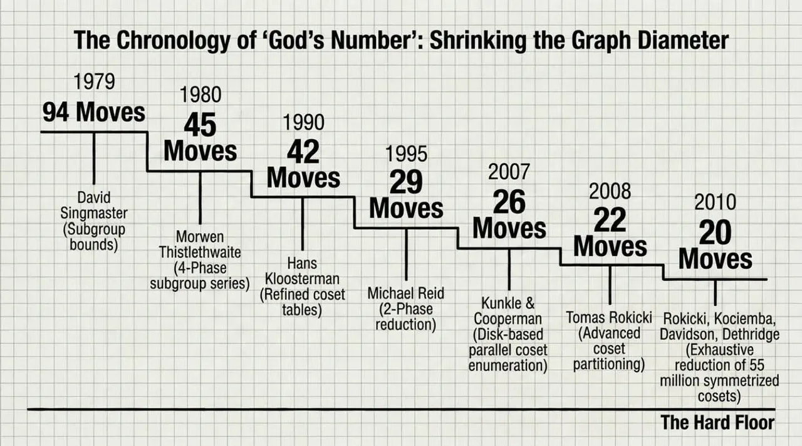
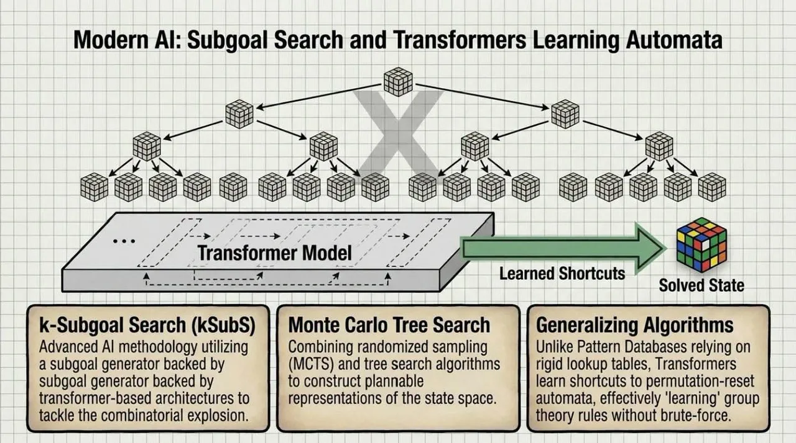

기둥 3 · 기울기를 재는 법 · 09장
그래디언트 — 가장 가파른 오르막 화살표
편미분을 모아 만든 나침반
편미분을 모아 만든 나침반
핵심 질문 — 언덕 위 한 점에서, 어느 방향으로 걸어야 가장 빨리 올라갈까? 그때의 가파름은?
08장에서 잰 편미분 두 개를 한 화살표로 묶으면 그래디언트 ∇f가 돼요. 이 화살표는 「가장 가파른 오르막 방향」을 가리키고, 길이는 「그 가파름」이에요. 원자료 ①과 ②의 첫 상자에 모두 나오는 주인공이에요.
숫자 요약은 이 장의 예시 계산에서 나온 값입니다(실제 데이터가 아닌 설명용 값).
계산배틀 2회전! 오늘 주인공 ∇는 「나블라」 또는 「델」이라고 읽어요.
편미분 두 개를 더하면 끝이죠? 오늘은 제가 이길 것 같아요!
행렬·벡터, 복잡한 공식을 몰라도 됩니다. 그림을 움직여 보고, 밑줄 친 말을 누르면 뜻이 나옵니다.
이 페이지 사용법: 밑줄 친 말을 누르면 뜻이 나옵니다(Esc로 닫기). 단계마다 그림을 직접 움직여 보고, 끝의 확인 퀴즈로 점검하세요. 앞 장: 08 편미분 — 한 방향으로만 재는 기울기
조교 둘이 숫자로 승부하고, 수강생은 손계산과 그림 조작으로 검산합니다. 오늘의 결승 문제: 「가장 가파른 기울기는 얼마?」
…(2, 4)의 길이는 √20. 손으로 이미 계산했어요.
지구본조 화이팅! 오늘은 나침반 담당이에요!
편미분 두 개는 동쪽·북쪽 기울기뿐이에요. 묶으면 「어느 쪽이 가장 가파른가」가 바로 나와요.
그래디언트 하나만 있으면 어느 방향의 기울기든 계산할 수 있어요(방향 기울기).
손실을 줄이려면 그래디언트의 반대쪽으로 가요. 그래디언트 없이는 AI가 배울 수 없어요.
이번 장은 02장(화살표)과 08장(편미분)이 만나는 곳이에요. 둘 중 하나가 흐릿하면 30초 복습 상자를 먼저 보세요.
상황 질문 — 등산 지도의 아무 점에 「여기서 가장 가파르게 올라가는 쪽」 화살표를 그려 넣는다면, 화살표는 어떻게 정할까요?
∇f에 화살표 기호도 없는데 어떻게 벡터예요?
학교 수학으로 보면: 02장 벡터의 성분 표기 그대로예요. 성분 자리에 08장 편미분을 넣었을 뿐이에요.
| 식 조각 | 읽는 법 | 뜻 |
|---|---|---|
| ∇f = (∂f/∂x, ∂f/∂y) | 나블라 에프 | 편미분을 성분으로 한 화살표 |
| ∇f = ∂f/∂x x̂ + ∂f/∂y ŷ | 단위 벡터로 쓰기 | 원자료 ②·③에 나오는 같은 표기 |
| f = x² + 2y² | 그릇 모양 언덕 | ∂f/∂x = 2x, ∂f/∂y = 4y |
f = x² + 2y², 점 (1, 1)
∂f/∂x = 2 × 1 = 2, ∂f/∂y = 4 × 1 = 4
∇f = (2, 4) — 오른쪽으로 2, 위로 4인 화살표
점 (0, 0)에서는 ∇f = (0, 0) — 바닥이라 오르막 방향이 없음
편미분 두 개를 괄호에 넣으니 화살표가 됐어요! 02장이랑 08장이 여기서 만나네요.
등산 지도에 점마다 「가장 가파른 오르막」 화살표를 그리면, 화살표가 길수록 그 자리가 가파른 곳이에요.
그래디언트 ∇f = (∂f/∂x, ∂f/∂y)는 언덕 바닥 지도(입력 공간) 위의 화살표예요. 방향은 가장 가파른 오르막, 길이는 그 가파름.
지도를 눌러 점을 옮기고, 빨간 화살표가 등고선과 어떻게 만나는지 보세요.
화살표는 곡면 위로 하늘을 향해 솟아 있겠죠!
화살표가 어디에 그려져 있는지 봐. 바닥 지도 위야, 하늘이야?
원자료 ②의 Gradient: ∇f = î ∂f/∂x + ĵ ∂f/∂y + k̂ ∂f/∂z. 원자료 ①의 Gradient 상자도 같은 내용을 세로 벡터 [ … ]ᵀ로 적었어요.

상황 질문 — 비탈에 서서 몸을 천천히 한 바퀴 돌리며 「이 방향으로 한 걸음이면 얼마나 올라가나」를 재면, 언제 가장 크게 올라갈까요?
왜 하필 그래디언트 방향이 가장 가팔라요? 그냥 그렇다고 믿어야 해요?
학교 수학으로 보면: 중학교 3학년 삼각비로 확인할 수 있어요. 아래 손계산처럼 각도를 바꿔 가며 값을 비교해 보면 돼요.
| 식 조각 | 읽는 법 | 뜻 |
|---|---|---|
| u = (cos α, sin α) | 걷는 방향 | 길이 1인 방향표 (02장 단위 벡터) |
| 기울기 = 2·cos α + 4·sin α | 방향 기울기 | ∇f = (2, 4)일 때 |
| 최댓값 |∇f| = √20 | 가장 큰 기울기 | 그래디언트 방향 (약 63.4°) |
α = 0° (동쪽): 2 × 1 + 4 × 0 = 2
α = 90° (북쪽): 0 + 4 = 4
α = 63.4° (∇f 방향): 2 × 0.447 + 4 × 0.894 ≈ 4.47 = √20
α = 45°: (2 + 4) × 0.707 ≈ 4.24 — 63.4°보다 작음
숫자를 넣어 보니 정말 ∇f 쪽이 제일 크네요. 2 + 4 = 6은 어떤 각도에서도 안 나와요!
비탈에서 몸을 돌리며 한 걸음씩 재 보면, 「가장 가파른 쪽」이 딱 한 방향 있고 정반대가 가장 가파른 내리막이에요.
방향 기울기 = ∇f와 방향표 u를 성분끼리 곱해 더한 값이에요. 최댓값은 |∇f|, 그때 u는 ∇f 방향. 원자료 ①: 「Points in the direction of steepest increase. Its magnitude gives the maximum rate of increase.」
각도를 0°부터 돌려 보세요. 오른쪽 곡선의 꼭대기는 어디인가요?
동쪽 2, 북쪽 4니까 둘 다 가면 6! 이게 최대죠!
45°로 맞춰 봐. 동쪽·북쪽에 반반씩 가는 거야. 6이 나와?
원자료 ①의 Gradient 설명 상자와 아래 Optimization 그림(동심 타원 위의 ∇f 화살표).

상황 질문 — 겨울 교실에서 몸을 가장 빨리 녹이려면 어느 쪽으로 걸어야 할까요? 위로 올라가는 것도 방법일까요?
원자료 ③에는 ∇t라고 써 있던데, t는 시간이에요?
학교 수학으로 보면: 08장 편미분을 세 번 하면 돼요. 원자료 ③은 함수 이름을 t로 썼을 뿐, 시간이 아니라 「어떤 값(예: 온도)」이에요.
| 식 조각 | 읽는 법 | 뜻 |
|---|---|---|
| T(x, y, z) = x + 2y + z²/4 | 예시 온도 | 방 안 점마다의 온도(℃) |
| ∇T = (1, 2, z/2) | 3차원 그래디언트 | 세 편미분 |
| ∇t = ∂t/∂x x̂ + ∂t/∂y ŷ + ∂t/∂z ẑ | 원자료 ③ 큐브 기둥 | 같은 식, 함수 이름만 t |
∂T/∂x = 1, ∂T/∂y = 2, ∂T/∂z = 2z/4 = z/2
점 (3, 2, 1): ∇T = (1, 2, 0.5)
길이 = √(1 + 4 + 0.25) = √5.25 ≈ 2.29
점 (3, 2, 4)에서는 (1, 2, 2) — 높을수록 위쪽 성분이 커짐
성분이 하나 늘었을 뿐 계산은 똑같네요. 큐브 좌표니까 공식도 깔끔하고요.
난로가 있는 교실에서는 「난로 쪽으로, 그리고 따뜻한 공기가 모이는 위쪽으로」가 가장 빨리 따뜻해지는 길이에요.
3차원 그래디언트 ∇T = (∂T/∂x, ∂T/∂y, ∂T/∂z). 큐브 좌표에서는 성분을 그대로 이어 붙이면 돼요. 원기둥·구면 좌표에서는 1/s 같은 「늘이는 수」가 붙어요(16장).
점의 높이 z를 바꿔 빨간 화살표의 위쪽 성분이 어떻게 변하는지 보세요.
큐브 좌표라서 세 성분을 그대로 이어 붙이면 되는 거죠?
맞아. 다만 원기둥 좌표에서도 그럴까? 16장 예고야.
원자료 ③ 큐브 기둥의 Gradient: ∇t = ∂t/∂x x̂ + ∂t/∂y ŷ + ∂t/∂z ẑ. 원기둥·구면 기둥의 1/s, 1/r 항은 16장에서 다뤄요.

모아가 AI에게 「f(x, y) = x² + 2y²의 점 (1, 1)에서 그래디언트를 그림으로 설명해 줘」라고 했더니 이렇게 답했어요.
그림이 멋있을수록 「이 화살표의 성분은 몇 개인가?」를 물어보세요. 입력 개수와 성분 개수가 같아야 그래디언트예요.
f = x² + 2y²의 점 (1, 1)에서 ∇f = (2, 4)일 때, 가장 큰 기울기를 두고 두 조교가 맞붙었어요.
「√20, 약 4.47이야. 화살표 길이니까.」
「동쪽 2 + 북쪽 4 = 6!」
누가 맞을지 먼저 예상해 보고 단추를 누르세요. 판정은 계산 결과로만 합니다.
개념정리 흐름: 그래디언트 ∇f → 방향 기울기와 가장 가파른 방향 → 3차원(n차원) 그래디언트
| 개념 | 한 줄 뜻 | 일상 비유 | 비유의 한계 |
|---|---|---|---|
| 그래디언트 | ∇f = (∂f/∂x, ∂f/∂y, …) — 편미분 모음 화살표 | 등산 지도의 오르막 표시 | 입력 공간 위의 화살표예요. 곡면 위로 솟지 않아요 |
| 방향 기울기 | 방향 u의 기울기 = ∇f와 u를 성분끼리 곱해 더하기 | 비탈에서 몸 돌리기 | u는 길이 1이어야 해요 |
| |∇f| | 가장 큰 기울기, 방향은 ∇f 쪽 | 가장 가파른 길 | 평평한 점에서는 0 — 바닥·꼭대기·안장 구별은 못 해요 |
| 3차원 ∇ | 성분 셋 (큐브 좌표) | 난로 쪽으로 가기 | 둥근 좌표는 16장의 늘이는 수가 필요 |
계산배틀 결과: 초파리 연구원 승. 오늘의 한 줄 — 「방향은 ∇f, 가파름은 |∇f|」.
…손계산 √20, 맞았어요.
6이 아니라 4.47… 길이는 루트였어요.
나침반 돌리기 최고! 다음은 내리막 대회래요!
다음 장 예고: 10장에서는 그래디언트의 반대쪽으로 걸어 바닥을 찾는 「경사 하강법」을 구슬 굴리기 조별 과제로 해 봐요.